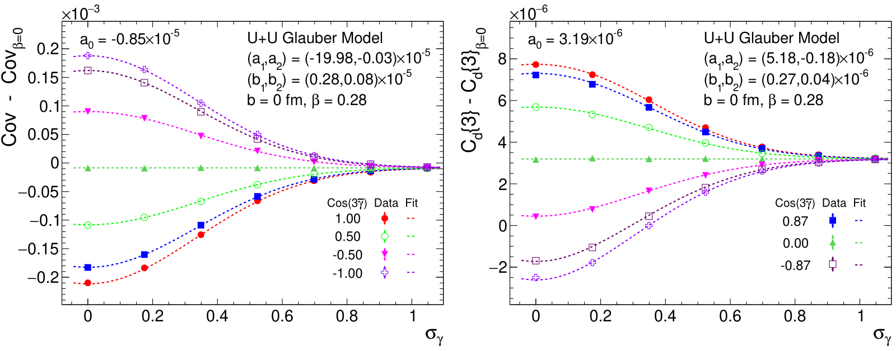
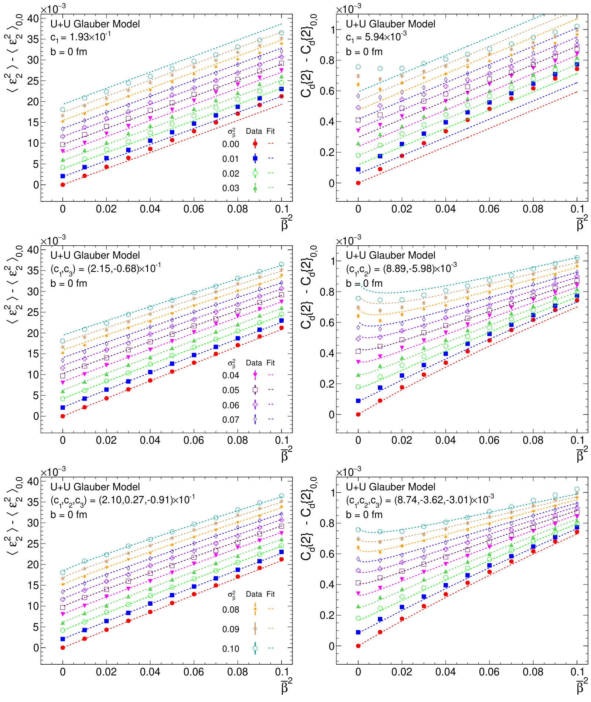
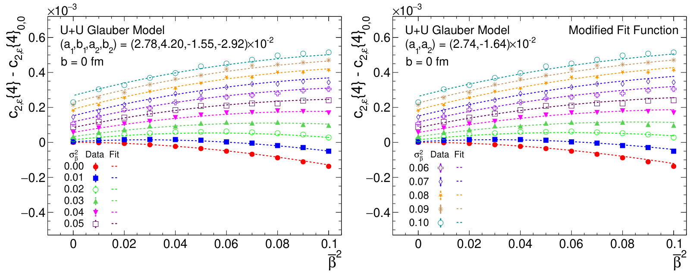
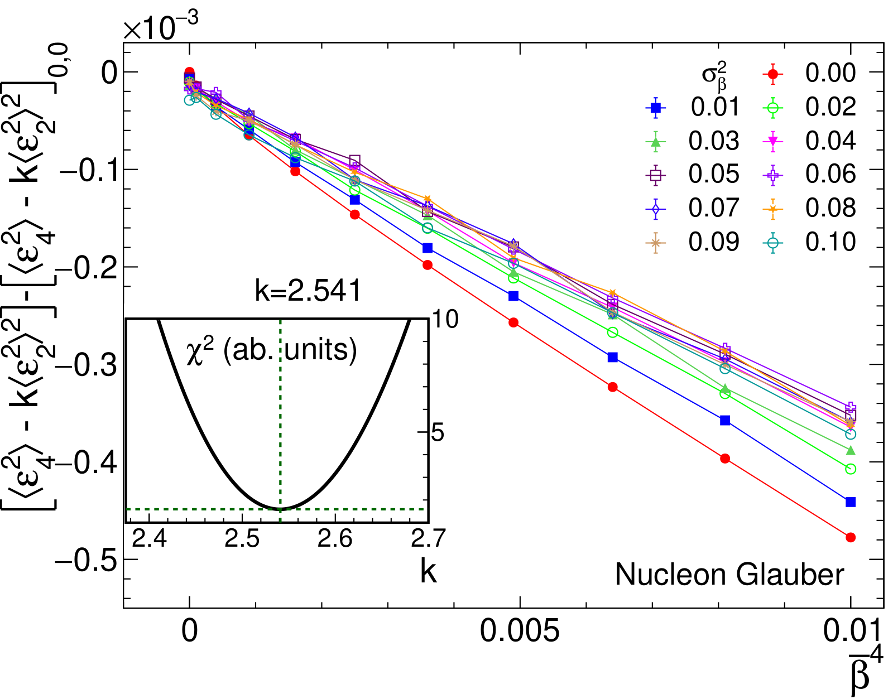

Nuclear shape fluctuations widen collision-geometry fluctuations and blur prolate–oblate differences
Impact of nuclear shape fluctuations in high-energy heavy ion collisions
A. Dimri, S. Bhatta, J. Jia, Eur. Phys. J. A 59, 45 (2023)
My role: co-author.
In one paragraph
Many nuclei do not have one fixed shape: their deformation fluctuates around an average. We study how this changes the initial shape and size of the hot region in heavy-ion collisions. Fluctuations in the amount of deformation widen the event-by-event spread in a predictable way. Fluctuations in the type of deformation wash out the difference between prolate and oblate nuclei.
1The gap: nuclei with a shape that is not fixed
Heavy-ion collisions are now used to measure nuclear shapes. The shape is described by two numbers: β, how strongly the nucleus is deformed, and γ, the type of deformation, from cigar-like (prolate, γ = 0°) through triaxial to pancake-like (oblate, γ = 60°).
In nuclear-structure theory, the ground state of many nuclei is a mixture of shapes with different (β, γ). Earlier studies of collision observables treated deformed nuclei as rigid; this paper adds the fluctuations.
2What we compute: the geometry of each collision
The nuclei are so fast that each collision takes one frozen snapshot of both nuclei: their shapes and orientations. From the nucleons that collide we compute two numbers per event: the eccentricity ε₂ (how elongated the overlap is, which drives elliptic flow) and the inverse size d⊥ (how compact it is, which drives radial flow and the mean transverse momentum).
We study the spread of these numbers over many events: their variances (two-particle), skewness (three-particle) and kurtosis (four-particle). We first derive simple formulas for how they depend on the mean and spread of β and γ. We then test them with a Monte Carlo Glauber model of head-on U+U collisions, where each nucleus gets a random (β, γ) drawn from Gaussian distributions: 170 settings with about 50 million events each.
3What we observe
Fluctuations of γ wash out prolate versus oblate
Three-particle correlations are the main handle on γ: their sign separates prolate from oblate shapes. When γ fluctuates, this signal shrinks roughly as e−9σγ²/2. A 20° fluctuation reduces it by nearly 40%.

Fluctuations of β widen the spread
The variances of ε₂ and d⊥ grow with ⟨β²⟩ = β̄² + σβ²: a spread in β adds to the signal just like a larger average β. The size variance also needs a smaller next-order term.

Higher-order quantities depend on higher powers of β, so the spread σβ matters even more there. The four-particle cumulant c2,ε{4} is negative for a rigid deformed nucleus but turns positive even for a small σβ.

4What we conclude
- β fluctuations change the variances, skewness and kurtosis of ε₂ and d⊥ in a controllable way, described by moments of β.
- γ fluctuations reduce the prolate–oblate difference for every observable. For large fluctuations, the values approach those of rigid triaxial nuclei.
- A negative c2,ε{4} that decreases further in central collisions would clearly indicate a large static deformation.
The mean and spread of β can be separated. The two-particle ⟨ε₂²⟩ only fixes β̄² + σβ². The combination ⟨ε₂⁴⟩ − k⟨ε₂²⟩² with k = 2.541 depends almost only on β̄, with about 7% best precision in this model. With β̄ known, ⟨ε₂²⟩ then gives σβ.

This separation works less well when σβ is comparable to or larger than β̄.
5What comes next
- Full hydrodynamics: test how well the separation of β̄ and σβ works on final-state flow observables, not only on the initial geometry.
- Triaxial nuclei such as ¹²⁹Xe: flow–momentum correlations support a triaxial shape for ¹²⁹Xe, but only if its γ fluctuations are not large. Shape fluctuations must be kept in mind when shapes are read from collision data.
All plots on this page are reproduced from that paper under CC BY 4.0. Animations are simplified illustrations made for this page, not results of the paper.